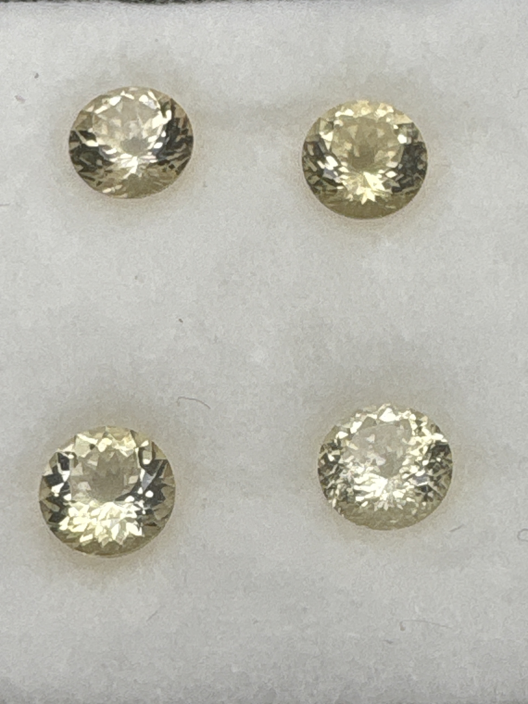

The Gem Drawer › No. 96

Four evenly matched pale champagne rounds — the best-matched set here.
| Catalogue no. | #96 |
|---|---|
| As labeled | Golden Scapolite - SET OF FOUR matched stones in this box, see notes |
| Shape / cut | Round (all four) |
| Weight | 1.19 (label is singular; likely combined/approximate for the set of 4, see notes) |
| Measurements | 7mm round (each, presumed) |
| Colour | Pale yellow / champagne ("golden") |
| Clarity / condition | Not recorded |
Interested in this stone, or in the collection as a whole? Terry VanWormer can answer questions about it.
Click here to inquireor email Terry directly at maxrebo34@gmail.com